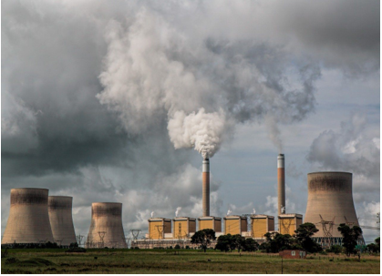
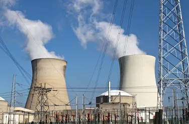
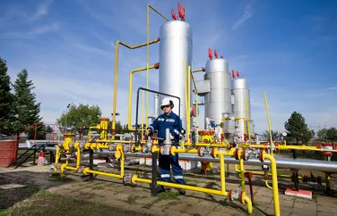
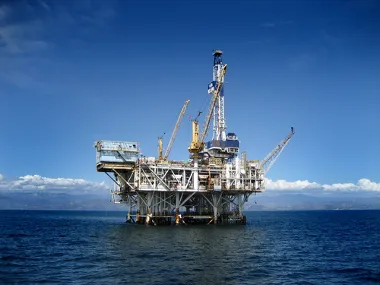

Como energia não renovável, temos o exemplo dos combustíveis fósseis, que têm sido amplamente utilizados em todo o mundo desde a Revolução Industrial devido à sua grande capacidade de produção de energia e alto calor e podem ser encontrados tanto nos continentes quanto nos oceanos. Esses restos orgânicos estão soterrados em sedimentos da parte mais alta do relevo. Ao longo do tempo, processos geológicos como a erosão e a dinâmica tectônica, daí o nome combustíveis fósseis. A vantagem dos combustíveis fósseis é que podemos citar alta energia (petróleo e carvão) e aquecer a casa nos períodos de frio (gás natural). O gás natural pode ser considerado uma fonte de energia limpa porque é mais leve que o ar e se dissipa rapidamente com menos poluentes que o petróleo e o carvão. O ruim é que emite muitos gases destruidores de ozônio, dos quais dependemos como combustível, além de gases destruidores de ozônio que contribuem para o aquecimento global.

Trata-se de um recurso energético estratégico, principalmente para países ou regiões que apresentam um baixo potencial hidrelétrico, além de ser menos dependente de outras fontes de energia. As energias nucleares contam com reservas maiores, utilizam menores áreas e não emitem poluentes gasosos na atmosfera.
Por outro lado, existem muitas críticas direcionadas à energia nuclear em razão de suas desvantagens, a saber: a destinação nem sempre eficaz do lixo atômico (radioativo e muito perigoso) das usinas nucleares, os elevados custos de produção, os altos riscos ambientais e sociais em casos de acidentes e também o fato de essa ser a mesma tecnologia utilizada para a fabricação de armamentos nucleares.
>
O gás natural é muito utilizado em usinas termoelétricas, sendo considerado como uma fonte mais vantajosa por apresentar menor impacto ambiental, maior facilidade de transporte, além de uma necessidade quase nula de armazenamento. É também utilizado como fonte de energia em indústrias, residências (gás de cozinha) e também em alguns tipos de veículos com adaptação para esse tipo de combustível.
O transporte do gás natural é realizado por meio de gasodutos, que são estruturas de custo mediano para instalação, mas de fácil manutenção, o que representa certa vantagem em comparação com outras fontes de energia. No Brasil, existem importantes áreas de extração desses recursos, com destaque para a Bacia de Santos, havendo também gasodutos que transportam petróleo retirado da Bolívia, produto de importação.

O Petróleo é, ainda nos dias atuais, a principal matéria-prima e uma das principais fontes de energia do mundo. Assim sendo, sua extração e utilização foram e ainda são alvos de conflitos envolvendo potências imperialistas e países produtores e refinadores. Trata-se, assim, de um recurso natural de caráter estratégico, pois é amplamente utilizado por veículos, constituindo-se como um elemento importante nos meios de transporte, além de também poder ser utilizado na fabricação de produtos derivados, notadamente o plástico.
Sabe-se que o petróleo é um hidrocarboneto que se forma a partir da deposição de restos orgânicos de animais e vegetais no fundo dos oceanos, onde também se constituem as bacias sedimentares. Assim, o soterramento desse material durante a consolidação das diversas camadas de sedimentos ao longo dos anos dá origem a um ambiente desprovido de oxigênio que se torna propício para a constituição de hidrocarbonetos.
Os combustíveis oriundos do petróleo são profundamente criticados sob o ponto de vista ambiental, pois a sua queima é responsável pela emissão de poluentes na atmosfera. Por esse motivo, vários países e entidades vêm buscando alternativas, a exemplo dos biocombustíveis. Além disso, o uso de outras fontes de energia também seria uma importante forma de depender menos economicamente desse tipo de recurso natural. Mesmo assim, podemos dizer que vivemos a “era do petróleo”, em que quem domina ou controla o uso desse material possui, em torno de si, um amplo poder econômico e político.